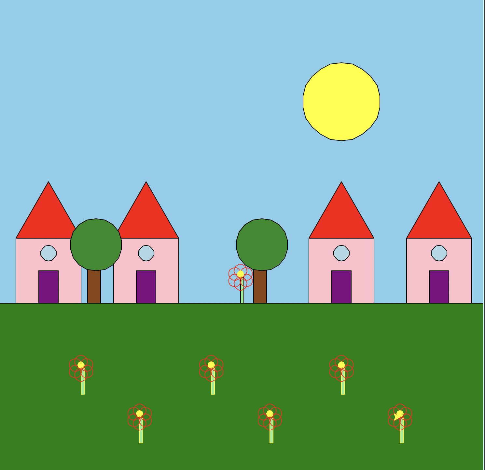

This project follows project two and is a more complex and refactored version of the turtle graphics scence. After learning a way to create more generalized code, I refactored my code to create more reusable functions and a more complex scene. I added more elements to the scene such as a flower garden, more houses, and trees.
This function is a refactored version of the code used to create the flowers in the scene. It creates a small flower with overlappiing circles as petals.
The function takes in parameters for the object, starting position, and size to allow for flexibility of size and location.:
• t: The turtle graphics object for drawing
• x, y: Starting position coordinates for the flower
• size: Scale factor (default 1.0) to make flowers larger or smaller
This function allows to me use each generalized function and more easily create my scene:
Here's the completed turtle graphics scene featuring my house with my small flower, a big and bright sun, and a tree:

This scene combines code from the previous project with new code to create a more complex scene that allows for more flexibility, generalization, and reuse of code. The house incorporates rectangle, a triangle and a small circle for the window. The sun follows a similar technique to the flower, using overlapping circle to create the circle. The tree is made of a rectangle for the trunk and a circle for the leaves, using similar code and techniques to the other elements in the scene.